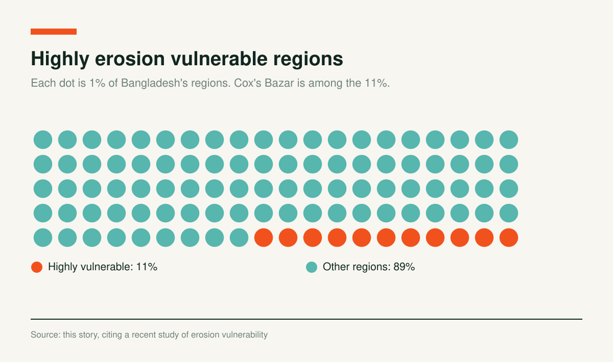

Restoring Sand Dunes to Prevent Coastal Erosion

Abdullah, a local fisherman in Cox’s Bazar, was standing on the edge of the sea and unfolded his lifelong battle with the waves of the Bay of Bengal. “Twenty years ago, when we came to catch fish, we would see those sand dunes far from here. From ten years ago, suddenly disruptions began. The situation has deteriorated to the point where it’s difficult for us to catch fish now. Even though we set up a net, the branches of the trees got entangled in the net. Furthermore, when sea level rises, our homes are washed away” - Abdullah (peuso name) expressed his concern when the Alliance for Cooperation and Legal Aid Bangladesh (ACLAB) interviewed him, as part of a coastal protection pilot project, ‘Living Shoreline’.
Coastal erosion has become a new reality in Cox's Bazar - the district is among the 11% highly erosion vulnerable regions in Bangladesh. According to a recent study, around 4 kilometres of sea beach is swallowed into the sea. Previous century’s notorious cyclones ravaged the coastal belts of Cox’s Bazar.

Now, the use of geobags has become a culture in the beaches, hiding the scenic beauty of the longest sea beach, Cox’s Bazar, under the label of preventing coastal erosion. At the same time,
unplanned development and booming tourism have deteriorated the socio-ecological setting of Cox’s Bazar’s coastal zones.
Erosion has severely affected coastal life. A recent study uncovered that high to very high hydro-meteorological, land resource, topographic, natural hazard, and anthropogenic pressures endangered Cox’s Bazar area’s 17% to 27%. Locals have witnessed agricultural and biodiversity loss, change in occupation, degradation in educational facilities, health-related and cultural loss, internal displacement, also, increasing pressure on women.
More specifically, increasing numbers of dying egg laying turtles, devastating impact on women reproductive health and their way of life are some of the most ignored ecological and social impacts. Also, fishermen like Abdullah are now compelled to switch their employment, as erosion-led salinity intrusion, and landslides make most of the canals and rivers unfit for fishing as before.
Coastal erosion pushed the coastal communities towards frequent floods. Therefore, transforming schools and educational institutions into shelter centres is a regular phenomenon now. Also, erosion forces the authorities to relocate the schools repeatedly. Both of these events adversely lowered the literary rate when further stimulating child marriage’s rate.
Causes of Coastal Erosion in Cox’s
The longest sea beach, Cox’s Bazar presents a serene surrounding for the tourists around the globe. However, booming tourist industry and Rohingya refugee influx exacerbated the sufferings of the locals when providing limited benefits. This reality increased the climate-induced hardships of the locals by offering suitable conditions for extreme coastal erosion.
Cox’s Bazar witnessed coastal erosion for two types of reasons - anthropogenic and natural. Climate change is the natural cause of sea-level rising and frequent cyclones and natural disasters. These eventually lead to coastal belt erosion.
Ballooning tourism industry has continuously built heavy infrastructures, even within 50 meters of the sea. In particular, politically influential people built more than hundred high-rise and heavy infrastructures on the floodplain shore of the sea. A young climate activist from Cox's Bazar, Jimran Mohammad pointed to the mismanagement of waste generated from tourism as one of the major reasons for erosion.
Furthermore, the current Marine Drive road is also constructed at a wrong place, not at the location which was permitted initially. Last year, erosion due to the full moon high tides, damaged the road and impacted 10 points in Teknaf. According to Ummay Marzan Jui, an environmental consultant and Project Officer to the US Embassy funded ‘Living Shoreline’ project noted, “the Marine Drive road was planned to be built in a place from where hills, sea, and localities can be seen all together. But the Government constructed it on the coast of the sea.”
Also, foreign development projects like dams, barrages, and massive bridges endangered most of the rivers’ flows and lowered sedimentation. Professor Sayedur Rahman Chowdhury, Institute of Marine Sciences, University of Chittagong narrated in an interview with the Business Standard, “If the volume of this sediment is higher, the beach becomes wider. On the other hand, if the water flow in the sea carries more sediment than the amount accumulated on the beach, there will be erosion.”
Then, massive deforestation is another major reason for coastal erosion which also leads to landslides and water lodging. On the other hand, from 1972-73, Bangladesh Government introduced Jhau plant plantation along the sea beach shoreline. Planting this foreign tree on a massive scale devastated the biodiversity and ecological setting in the coastal areas.
An observation of the Bangladesh Oceanographic Research Institute (BORI) shows that erosion is more frequent where there are more concrete structures and Jhau trees, rather than a location with natural setting. Sayeed Mahmood Belal Haider, former director general of Bangladesh Oceanographic Research Institute (BORI), told the Business Standard, "Snails and oysters can create underwater structures that can act like living dams and protect the beach from erosion. Essentially, this natural biological defense system has protected our beaches so far. But the beach is now disappearing into the sea as the construction of unplanned infrastructures is destroying this natural barrier."
After that, overfishing has left no point of sea beach uninterrupted. It eventually disrupted the ecosystem of the coast. Ummay Marzan Jui mentioned, “non-availability of ‘uninterrupted beach’ helped sand dales disappear”.
She further mentioned that previous four or five generations of locals got disconnected from their local ecological knowledge. Such as, a seventy year old man could remember how they used to plant specific trees to preserve the sand dales. However, a fourty or even fifty year age group of locals have no idea of this way of restoring sand dales and preventing coastal erosion.
Fishermen are going and coming whenever and wherever they want. But they have less understanding about the importance of ‘uninterrupted beach’ to safeguard the ecosystem and biodiversity of Cox’s Bazar. Moreover, local people mostly prefer temporary and ecologically harmful measures to control coastal erosion, such as placing geobags on the coast, and building high-rise embankments.
Finally, the government authority in Cox’s Bazar has a lack of expertise, proper understanding, and capacity to take suitable and nature-based measures against environmental and climate related issues.
Restoring sand dunes, as solutions
Restoring sand dunes is a traditional practice in the coastal areas of Cox’s Bazar. Also, National Oceanic and Atmospheric Administration (NOAA) Fisheries introduced a coastal protection method, ‘Living shoreline’ - to restore sand dunes and stabilize shorelines across the globe.
Unfortunately, a long disconnection with the local ecological knowledge led local people prone to go for short-term and harmful steps like using geobags on the shorelines to prevent erosion, rather than utilizing the natural defence system by restoring sand dales and biodiversity.
Sand-binding and stabilized plants of different varieties covered and topped on the well-vegetated dunes. These dunes play a crucial role in coastal protection and environmental conservation. Sand dunes not only help combating erosion but also support in reducing carbon emissions.
Coastal sand dunes provide natural barriers for the tidal waves, high tides, and storms, safeguarding the natural habitats and shorelines. In 2022, the US Embassy funded a pilot project and the ACLAB with the technical support from the Sagor Seba implemented the project called, ‘Living Shoreline: Sustainable Restoration of the Bay of Bengal Coastal Forest and Wetlands in Bangladesh’ in five locations of Cox's Bazar.
Ummay Marzan Jui, as a Project Officer of the pilot project explained the project’s successes, limitations, and challenges. The coastal protection project firstly worked on reducing the gap of traditional ecological challenges by educating the locals about restoring sand dunes. Then, they successfully built up a nursery of indigenous plants like Sagorlota, Nishinda, Akanda, etc. to plant these saplings on the shoreline to restore the dales.
She noted, “saplings would be planted in three layers - seaweed like Sagorlata in the first layer after the wet sand, then herbs like Nisinda, Keya, Akanda and in the third tier Hijal, Tamal or Jauja trees. To make this area uninterrupted, three-layered trees must be binded with fetch, bamboo, or wild rock. So, these seaweeds, herbs build a large amount of sand. These sand dunes block high tide, waves and storms and Sagorlota seaweed’s three feet deep roots prevent soil erosion.”
Also, Sagorlota plant is also known as ‘send maker’. Environmental scientist Ansarul Karim told the Financial Express, “"Once there were huge sand dunes around 20 to 30 feet high along the beach from Cox's Bazar to Teknaf. And the main plant of these dunes was Sagarlata. Since we had to lose most of our sand dunes and Sagarlata, more than 500 metres of land on the beach have so far been lost to the sea in past 30 years,"
In order to keep the three-layered afforested area secured and uninterrupted, locals and tourists can access the sea beach using separate walkways, boardwalks and walkover. It will reduce deforestation and also erosion on the coast.
Dr. Shah Newaz Chowdhury, Assistant Professor at the Marine Science Institute, University of Chittagong also emphasized that the damage of natural defense is the core reason for coastal erosion. Particularly, death of creeper plants and disappearance of sand dunes are the major ones. Therefore, only restoring sand dunes by afforesting the shorelines will save Cox’s Bazar sea beach coastal erosion free.
Charts and interactives by Coastal Voices. All figures come from the reporting above.